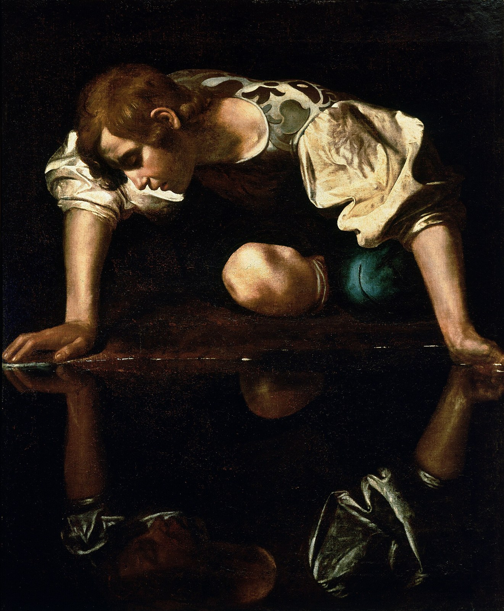

A1 — Arms raised toward the sky
Vol 1 · Exploration 1 — How to Get Faith · image-007.jpeg (393×314)
Problem: visible “JUPITER” stock watermark (copyrighted).
Current

Proposed — free (Pexels), public
SWAP → free-license arms-raised silhouette at sunrise (no watermark)
A2 — “Euclid’s Axioms” banner
Vol 1 · What We Are Being Formed For · image-013.jpeg (318×159)
Problem: third-party Mathigon branded banner (logo + branding).
Current

Proposed
Or replace with a public-domain plate from Byrne’s Euclid (1847) if you want an image here.
REMOVE (or PD Byrne’s Euclid — your call)
A3 — Connecting with Self
Vol 2 · Exploration 5 — Four Connects · image-004.png (374×427)
Problem: visible “jupiterimages” watermark (copyrighted); also a face.
Current

Proposed — free (Pexels), public
SWAP → still reflective water (self-reflection), no face/watermark
A4 — Four Connects (pieces fitting together)
Vol 2 · Exploration 5 — Four Connects · image-009.jpeg (235×340)
Problem: visible “gettyimages” watermark (copyrighted).
Current

Proposed — free (Pexels), public

SWAP → free puzzle-pieces photo (no hands/watermark)
A5 — “Believing a Lie” 3D text
Vol 2 · Exploration 10 — Training Plan · image-008.jpeg (251×201)
Problem: decorative 3D-text graphic with a deviantArt URL (third-party).
Current

Proposed
REMOVE
A6 — Book cover
Vol 2 · Introduction — The Bridge from Knowing to Doing · image-012.jpeg (311×466)
Problem: a third-party book cover (“Relational Discipleship,” D. R. Smith) used decoratively — clearest copyright issue.
Current

Proposed
Optional: replace with a free “hands joined / band” image if you want an image there.
REMOVE (or free replacement — your call)
A7 — “TPM Process Map” flowchart
Vol 2 · Exploration 3 — Believing a Lie · image-006.jpeg (302×150)
Problem: a branded third-party process diagram (TPM / Theophostic).
Current

Proposed
REMOVE (redraw later if wanted)
A8 — The Sower (Heart Soil)
Vol 2 · Exploration 1 — Heart Soil · image-001.jpeg (260×194)
Problem: a painting of the Sower, likely copyrighted artwork.
Current

Proposed — public domain (CC0)

SWAP → Van Gogh, “The Sower” (1888) — public domain, thematically exact
A9 — Believing a Lie (the reflection)
Vol 2 · Exploration 3 — Believing a Lie · image-002.jpeg (268×188)
Problem: a grayscale fantasy illustration, likely copyrighted artwork.
Current

Proposed — public domain

SWAP → Caravaggio, “Narcissus” — a man believing the lie of his own reflection (PD)
A10 — Uncertainty quote
Introduction · Note on Proof and Certainty · image-003.jpeg (300×168)
Problem: a watermarked stock quote-card image.
Current

Proposed — typeset (no image)
TYPESET → render the quote as a clean blockquote; drop the watermarked image